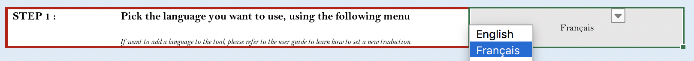

Setting-up a Data entry file¶
Downloading and unpacking¶
Set language¶
It is currently possible to use XLQSI in five different languages. The English, French, Russian and Spanish versions have been directly taken from the WHO’s website. The Khmer translation was made by ITech’s team in Cambodia.
Language selection happens on the first tab of the data entry workbook, just by choosing the desired language in the dropdown menu as shown in Fig. 1 .

Adding a new translation language to XLQSI is a simple even if very systematic task. The procedure to adapt translations or add new ones is described in technical documentation.
Define the completion checks¶
The second step in setting-up a data entry file is to create the completion checks for each activity. To understand the link between the two items, please refer to the introductory content.